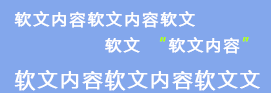
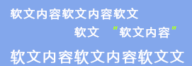
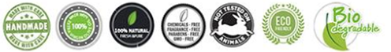

- 关于我们
- 品质保障
- 知识产权
 

-
我们是谁
我们是谁：
很多时候我们的问题来自四面八方，我们总是面临的诱惑太多而所知甚少......
当谈及我们最亲密的肌肤问题，很多人最终发现只是常年在美白、祛痘等等的误区里挣扎，而无法区分疾病及正常的洁肤护肤，做为专业人员，我们将通过这一平台为广大客户提供基于最自然防护的洁肤护肤产品。
-
信赖我们的理由
我们是谁：
很多时候我们的问题来自四面八方，我们总是面临的诱惑太多而所知甚少......
当谈及我们最亲密的肌肤问题，很多人最终发现只是常年在美白、祛痘等等的误区里挣扎，而无法区分疾病及正常的洁肤护肤，做为专业人员，我们将通过这一平台为广大客户提供基于最自然防护的洁肤护肤产品。
-
联系我们
我们是谁：
很多时候我们的问题来自四面八方，我们总是面临的诱惑太多而所知甚少......
当谈及我们最亲密的肌肤问题，很多人最终发现只是常年在美白、祛痘等等的误区里挣扎，而无法区分疾病及正常的洁肤护肤，做为专业人员，我们将通过这一平台为广大客户提供基于最自然防护的洁肤护肤产品。
品质保障
供应商选择
我们所有的供应商必须是经过多年的考察和筛选，我们一贯秉持的原则 (最专业的队伍，做最专业的事业)。
文字与皮肤一样，不要过度的修饰。我们知道不是每一位客户都需要成为护肤专家，但不做过度和夸大的宣传仍是我们的责任，我们将清楚标示每一产品的成分，最显示我们与众不同的品质是我们将列示我们的产品所不含的成分！赢得我们信任和尊敬的是来自于默默地精工细作，而非品牌和名声。
我们产品的信誉保障来自：
供应商介绍
这家供应商我们考察了整整5年，舒适的产品体验使人难以忘怀，而连续的品质保证是我们选择它的真正原因。在欧盟有机品质保证的前提下，更是明确列示了产品所有不含的化学添加成分，这才是真正货真价实的天然有机产品。就凭这张负面清单，选择它不再需要其他理由。希望不久的将来，不光业内人士的知晓，广大的普通人群更是能感受到它所带来的特殊体验。
菠丹妮
自家种植的300多公顷有机花园，欧盟有机认证，它的品质无可挑剔，同时又将天然环保演绎到极致，连标签上的文字都是采用的植物油墨。
随着2010年的世博会，它的名字开始深入很多中国家庭。
看看谁来为它站台。
-
产品知识
产品知识
关于天然洗/护肤产品
我们不提倡皮肤日常过度的修饰和不必要的护理，所谓大道至简，一般的肌肤只要在清洁时予以适当的养护即可。除非一些特殊的肌肤，在适当养护时采取一些针对的预防措施，如油性肌肤，敏感肌肤。这时，最天然的植物产品。
传统手工皂
产品知识问答
购买流程
1.注册/登陆：通过手机号/邮箱进行用户注册并登陆
2.产品搜索：可按商品分类、供应商、或高级搜索工具直接搜索所需产品
3.下单购买：将所需产品加入购物车，进行结算。
4.订单提交：填写收货人信息、选择配送方式、支付方式、开票信息（如需要）后选择提交订单
配送方式及运费
验货后，若发现商品错发、商品少发、商品有表面质量等影响签收因素问题，可当场向送货员说明情况并拒签。
一般情况下，因产品本身的特殊性：均为欧洲原装进口，严格经过海关、商检的核查检验，非产品本身问题均不接受退货。恳请广大客户谅解。